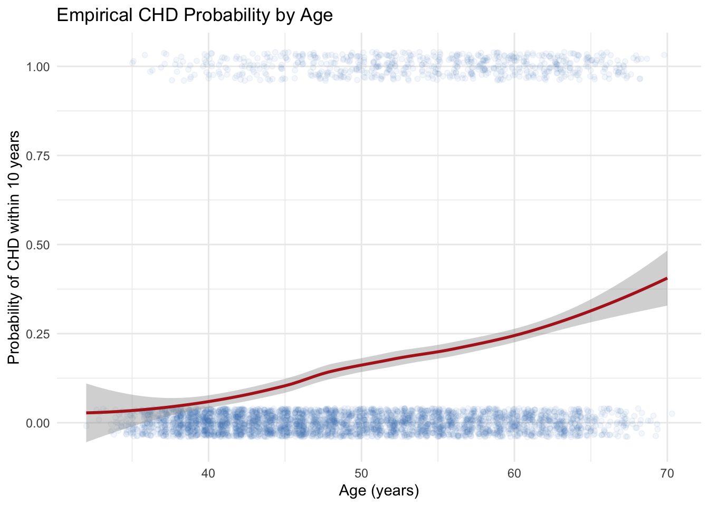
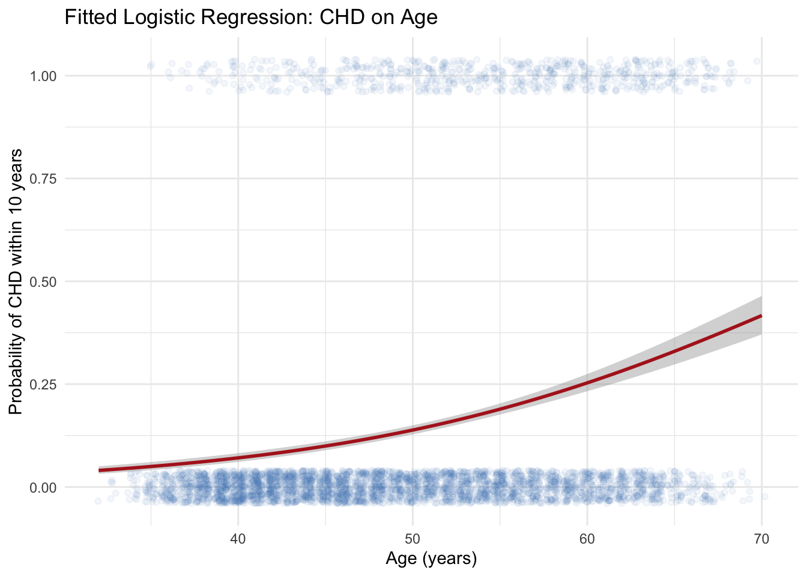

library(tidyverse)
library(this.path)
setwd(this.dir())
framingham <- read_csv("../../data/framingham.csv") |>
mutate(
male = factor(male, levels = c(0,1), labels = c("Female","Male")),
currentSmoker = factor(currentSmoker, levels = c(0,1), labels = c("Non-smoker","Smoker")),
prevalentHyp = factor(prevalentHyp, levels = c(0,1), labels = c("No","Yes")),
diabetes = factor(diabetes, levels = c(0,1), labels = c("No","Yes")),
TenYearCHD = factor(TenYearCHD, levels = c(0,1), labels = c("No","Yes")),
education = factor(education, levels = 1:4,
labels = c("Some HS","HS Diploma","Some College","College Degree"))
)Day 8 (PM) Lab: Logistic Regression
SC INBRE Biostatistics Summer Intensive 2026
1 Overview
This lab puts the Day 8 morning material into practice. You will fit, interpret, and compare logistic regression models on the Framingham Heart Study data.
How this lab works:
- Part 1 (instructor demo, ~20 min): Follow along as the instructor works through a complete simple logistic regression with a different predictor than the morning example.
- Part 2 (on your own, ~90 min): Five exercises of increasing difficulty. Create a new
.qmdfile, work through each exercise, render when done.
The Quick Reference Card in Section 3 has the key functions.
2 Part 1: Instructor Demo
2.1 Setup
2.2 Step 1: Check Variable Form
We want to predict CHD risk (TenYearCHD) from age. First, inspect the empirical CHD probability across age.
framingham |>
mutate(CHD_numeric = as.numeric(TenYearCHD) - 1) |>
ggplot(aes(x = age, y = CHD_numeric)) +
geom_jitter(alpha = 0.06, height = 0.04, color = "steelblue") +
geom_smooth(method = "loess", color = "firebrick", se = TRUE, linewidth = 1) +
labs(x = "Age (years)",
y = "Probability of CHD within 10 years",
title = "Empirical CHD Probability by Age") +
theme_minimal()
The loess curve rises steadily. A logistic regression with age as a linear term on the log-odds scale looks appropriate.
2.3 Step 2: Fit the Model and Interpret
chd_age <- glm(TenYearCHD ~ age,
data = framingham,
family = binomial)
summary(chd_age)
Call:
glm(formula = TenYearCHD ~ age, family = binomial, data = framingham)
Coefficients:
Estimate Std. Error z value Pr(>|z|)
(Intercept) -5.561090 0.283746 -19.60 <2e-16 ***
age 0.074650 0.005265 14.18 <2e-16 ***
---
Signif. codes: 0 '***' 0.001 '**' 0.01 '*' 0.05 '.' 0.1 ' ' 1
(Dispersion parameter for binomial family taken to be 1)
Null deviance: 3612.2 on 4239 degrees of freedom
Residual deviance: 3396.6 on 4238 degrees of freedom
AIC: 3400.6
Number of Fisher Scoring iterations: 5The coefficient on age is in log-odds units. To get the odds ratio:
exp(cbind(OR = coef(chd_age), confint(chd_age))) OR 2.5 % 97.5 %
(Intercept) 0.003844584 0.002190705 0.006664767
age 1.077507075 1.066517962 1.088765650Each additional year of age multiplies the odds of CHD by about 1.07. Rescaled to a decade:
exp(10 * coef(chd_age)["age"]) age
2.109606 exp(10 * confint(chd_age)["age", ]) 2.5 % 97.5 %
1.904065 2.340691 A 10-year age difference is associated with roughly a 2-fold increase in the odds of CHD.
2.4 Step 3: Visualize the Fitted Curve
framingham |>
mutate(CHD_numeric = as.numeric(TenYearCHD) - 1) |>
ggplot(aes(x = age, y = CHD_numeric)) +
geom_jitter(alpha = 0.06, height = 0.04, color = "steelblue") +
geom_smooth(method = "glm", method.args = list(family = "binomial"),
color = "firebrick", se = TRUE, linewidth = 1) +
labs(x = "Age (years)",
y = "Probability of CHD within 10 years",
title = "Fitted Logistic Regression: CHD on Age") +
theme_minimal()
2.5 Step 4: Predicted Probabilities
new_ages <- tibble(age = c(35, 45, 55, 65))
new_ages |>
mutate(p_chd = predict(chd_age, newdata = new_ages, type = "response"))# A tibble: 4 × 2
age p_chd
<dbl> <dbl>
1 35 0.0498
2 45 0.0996
3 55 0.189
4 65 0.330 Predicted probability of CHD rises from about 7% at age 35 to about 28% at age 65.
3 Part 2: Exercises
3.1 Instructions
Step 1. Open a new Quarto document: File -> New File -> Quarto Document. Title it "Day 8 Lab: Logistic Regression", select HTML, click Create.
Step 2. Replace the template content with this YAML and setup chunk:
---
title: "Day 8 Lab: Logistic Regression"
subtitle: "SC INBRE Biostatistics Summer Intensive 2026"
date: today
format:
html:
toc: true
theme: cosmo
execute:
echo: true
warning: false
message: false
---
```{r}
library(tidyverse)
library(this.path)
setwd(this.dir())
framingham <- read_csv("../../data/framingham.csv") |>
mutate(
male = factor(male, levels = c(0,1), labels = c("Female","Male")),
currentSmoker = factor(currentSmoker, levels = c(0,1), labels = c("Non-smoker","Smoker")),
prevalentHyp = factor(prevalentHyp, levels = c(0,1), labels = c("No","Yes")),
diabetes = factor(diabetes, levels = c(0,1), labels = c("No","Yes")),
TenYearCHD = factor(TenYearCHD, levels = c(0,1), labels = c("No","Yes")),
education = factor(education, levels = 1:4,
labels = c("Some HS","HS Diploma","Some College","College Degree"))
)
```Step 3. Work through Exercises 1–5 in order. For each one, add a code chunk, run your code, and write 2–3 sentences interpreting the results.
Step 4. Render when finished and fix any errors.
Note
Exercises 1–3 cover the core material. Exercise 4 introduces confounding. Exercise 5 is a full model-building workflow.
Exercise 1 – Simple Logistic Regression with a Binary Predictor.
Use
count()to tabulateTenYearCHDbycurrentSmoker. What proportion of smokers develop CHD? What proportion of non-smokers do?Fit a simple logistic regression model predicting
TenYearCHDfromcurrentSmoker. Report the coefficient fromsummary().Compute the odds ratio (OR) and its 95% confidence interval using
exp(cbind(OR = coef(model), confint(model))). Interpret the OR in plain language.Confirm that this OR matches what you would get from a 2x2 table:
tab <- table(framingham$currentSmoker, framingham$TenYearCHD) tab (tab[2,2] * tab[1,1]) / (tab[1,2] * tab[2,1])
# your code hereExercise 2 – Simple Logistic Regression with a Continuous Predictor.
Use
geom_jitter()andgeom_smooth(method = "loess")to inspect the relationship betweensysBPandTenYearCHD.Fit a simple logistic regression of
TenYearCHDonsysBP. Report the coefficient, OR, and 95% CI.The OR per 1 mmHg is hard to interpret. Compute the OR for a 20 mmHg increase using
exp(20 * coef(model)["sysBP"])and the corresponding CI. Write one sentence interpreting this rescaled OR clinically.Plot the fitted logistic curve using
geom_smooth(method = "glm", method.args = list(family = "binomial")).
# your code hereExercise 3 – Multiple Logistic Regression and Confounding.
Fit a model predicting
TenYearCHDfromcurrentSmokeralone. Note the OR for smoking.Now fit a model predicting
TenYearCHDfrom bothcurrentSmokerandage. Compute the adjusted OR for smoking (controlling for age).Compare the unadjusted and adjusted ORs for smoking. Did the OR get larger, smaller, or stay the same? Why do you think this happened? (Hint: check
framingham |> group_by(currentSmoker) |> summarize(mean_age = mean(age)).)Test whether age is a useful addition to the model using
anova(model_smoker, model_smoker_age, test = "LRT"). Interpret the p-value.
# your code here4 Quick Reference Card
4.1 Setup
library(tidyverse)
library(this.path)
setwd(this.dir())
framingham <- read_csv("../../data/framingham.csv")4.2 Checking Variable Form on a Binary Outcome
df |>
mutate(Y_numeric = as.numeric(Y) - 1) |>
ggplot(aes(x = predictor, y = Y_numeric)) +
geom_jitter(alpha = 0.05, height = 0.04) +
geom_smooth(method = "loess", color = "firebrick", se = TRUE)4.3 Fitting Models
| Function | What it does |
|---|---|
glm(y ~ x, data = df, family = binomial) |
Simple logistic regression |
glm(y ~ x1 + x2, data = df, family = binomial) |
Multiple logistic regression |
summary(model) |
Coefficients, z-tests, deviance |
exp(cbind(OR = coef(m), confint(m))) |
OR table in one go |
AIC(m1, m2) |
Compare models, lower is better |
anova(m_small, m_large, test = "LRT") |
Likelihood ratio test |
step(model, direction = "both", trace = 0) |
AIC-based stepwise |
predict(model, type = "response") |
Predicted probabilities |
drop_na(all_of(vars)) |
Complete cases for model comparison |
4.4 Plotting the Fitted Curve
df |>
mutate(Y_numeric = as.numeric(Y) - 1) |>
ggplot(aes(x = predictor, y = Y_numeric)) +
geom_jitter(alpha = 0.05, height = 0.04) +
geom_smooth(method = "glm", method.args = list(family = "binomial"),
color = "firebrick", se = TRUE)4.5 Rescaling Odds Ratios to Meaningful Units
exp(10 * coef(model)["age"]) # 10-year OR
exp(20 * confint(model)["sysBP", ]) # 20 mmHg CI
exp(40 * coef(model)["totChol"]) # 40 mg/dL OR4.6 Common Interpretive Phrases
| Quantity | How to say it |
|---|---|
| OR = 1.5 | “1.5-fold higher odds” or “50% higher odds” |
| OR = 2.0 | “double the odds” |
| OR = 0.5 | “half the odds” or “50% lower odds” |
| OR = 1.0 (CI includes 1) | “no evidence of an association” |
| Adjusted OR | “after controlling for [other variables]” |